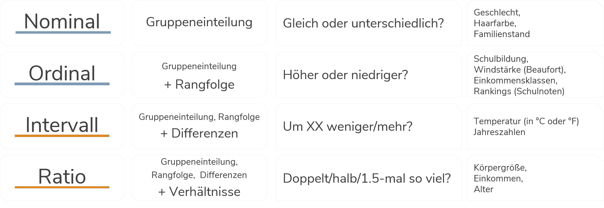

2 Arbeiten mit Datensätzen in Stata
Nachdem wir uns in Stata etwas umgesehen haben, können wir uns jetzt dem eigentlichen Arbeiten mit Datensätzen zuwenden.
cd ....
use "BIBBBAuA_2018_suf1.0.dta"2.1 Befehlsstruktur
Ganz nebenbei haben wir in Kapitel 1 bereits die ersten Stata-Befehle verwendet. Bevor wir jetzt aber tiefer einsteigen nochmal einmal allgemein:
Die grundsätzliche Struktur von Stata-Kommandos ist immer befehl variable, optionen. Zunächst geben wir also immer an, was passieren soll - bisher war das eben zum Beispiel eine Auflistung (list) einiger Variable für einige Zeilen:
list intnr Bula gkpol Stib zpalter in 11/12 | intnr Bula gkpol Stib zpalter |
|--------------------------------------------------|
11. | 1562 Berlin 500.000 Angestel 31 |
12. | 1955 Berlin 500.000 Angestel 58 |Mit Hilfe von Optionen können wir die Ausgabe verändern: bspw. hatten wir schong gesehen, dass durch das Anhängen der Option nolabel die ‘rohen’ Zahlenwerte statt der beschrifteten Ausprägungen angezeigt werden:
list intnr Bula gkpol Stib zpalter in 11/12, nolabel | intnr Bula gkpol Stib zpalter |
|---------------------------------------|
11. | 1562 11 7 2 31 |
12. | 1955 11 7 2 58 |2.1.1 Zeilenumbrüche
Kommandos in Stata sind zeilenbasiert. D.h. alles was zu einem Kommando gehört, muss in der gleichen Zeile stehen. Umgekehrt wird auch alles, was in einer Zeile steht als Teil des Kommandos verstanden. Daher werden bei list intnr Bula gkpol Stib zpalter in 11/15 auch nicht nur intnr sondern auch die anderen Variablen angezeigt.
Das funktioniert nicht:
list intnr Bula
gkpol Stib zpalter in 11/12(Hier werden erstmal 20012 Zeilen von
intnrundBulaausgegeben)
command gkpol is unrecognized
r(199);
Mit /// können wir Zeilen verknüpfen:
list intnr Bula ///
gkpol Stib zpalter in 11/12 | intnr Bula gkpol Stib zpalter |
|---------------------------------------|
11. | 1562 11 7 2 31 |
12. | 1955 11 7 2 58 |2.1.2 Kommentare
Außerdem können wir mit // Kommentare in unsere DoFiles einfügen. // blendet alles folgende am Ende der Zeile aus:
list intnr Bula gkpol Stib zpalter in 11/15 // dies ist ein kommentar/// kann auch zum Kommentieren verwendet werden:
list intnr Bula /// hier kann ein kommentar stehen
gkpol Stib zpalter in 11/15 // hier geht es weiter, aber der Befehl endet mit dieser ZeileAlternativ können wir mit * eine komplette Zeile ‘deaktivieren’:
*list intnr Bula gkpol Stib zpalter in 11/15 So wird der Befehl ignoriert.
2.2 Auszählen & Überblick erhalten
Mit tabulate bekommen wir eine Auszählung der Ausprägungen einer Variable, indem wir einfach den Variablennamen anhängen
(kann auch mit tab m1202 abgekürzt werden):
tabulate m1202 | is not a valid command name
r(199);
Höchster Ausbildungsabschluss | Freq. Percent Cum.
----------------------------------------+-----------------------------------
keine Angabe | 45 0.22 0.22
Ohne Berufsabschluss | 1,091 5.45 5.68
duale o. schulische Berufsausbildung/ei | 9,297 46.46 52.13
Aufstiegsfortbildung (Meister, Technike | 1,725 8.62 60.75
Fachhochschule, Universität/ geh., höhe | 7,854 39.25 100.00
----------------------------------------+-----------------------------------
Total | 20,012 100.00In der ersten Spalte werden die verschiedenen Ausprägungen aufgelistet, in der zweiten Spalte finden wir dann die absoluten Häufigkeiten (Freq.) der jeweiligen Ausprägung, in der dritten Spalte finden wir die relativen Häufigkeiten (Percent) und in der vierten Spalte (Cum.) finden wir die kumulierten relativen Häufigkeiten:
Freq.: der Datensatz enthält 1,091 Befragte ohne Berufsabschluss (absolute Häufigkeit)Percent: 5,45% der im Datensatz enthaltenen Befragte haben keinen Berufsabschluss (relative Häufigkeit)Cum: 5,68% der im Datensatz enthaltenen Befragte haben keinen Berufsabschluss oder machten keine Angabe (kumulierte relative Häufigkeit)
Mit nolabel die dahinterliegenden Zahlenwerte anzeigen lassen:
tabulate m1202, nolabel | is not a valid command name
r(199);
Höchster |
Ausbildungs |
abschluss | Freq. Percent Cum.
------------+-----------------------------------
-1 | 45 0.22 0.22
1 | 1,091 5.45 5.68
2 | 9,297 46.46 52.13
3 | 1,725 8.62 60.75
4 | 7,854 39.25 100.00
------------+-----------------------------------
Total | 20,012 100.00Mit Hilfe von d und labelbook können wir uns die Labels ausgeben lassen:
d m1202
labelbook M1202 | is not a valid command name
r(199);
storage display value
variable name type format label variable label
--------------------------------------------------------------------------------
m1202 byte %8.0g M1202 Höchster Ausbildungsabschluss
--------------------------------------------------------------------------------
value label M1202
--------------------------------------------------------------------------------
values labels
range: [-1,4] string length: [12,57]
N: 5 unique at full length: yes
gaps: yes unique at length 12: yes
missing .*: 0 null string: no
leading/trailing blanks: no
numeric -> numeric: no
definition
-1 keine Angabe
1 Ohne Berufsabschluss
2 duale o. schulische Berufsausbildung/einf.,mittl. Beamte
3 Aufstiegsfortbildung (Meister, Techniker, kfm. AFB u.ä.)
4 Fachhochschule, Universität/ geh., höhere Beamte
variables: m1202Für Fälle ohne gültige Angaben zum höchsten Ausbildungsabschluss wurde also -1 als Wert in m1202 abgelegt.
Stata berücksichtigt diese Tatsache aber noch nicht und summiert bspw. die kumulierten relativen Häufigkeiten auch über die fehlenden Angaben auf.
Um das zu ändern, müssen wir -1 als missing value überschreiben.
2.3 Fehlende Werte
Fehlende Werte, sog. missing values werden in Stata mit . abgelegt und werden dann für die weiteren Berechnungen ausgeschlossen.
Um also -1 als . zu überschreiben, können wir zB auf den replace Befehl zurückgreifen:
tabulate m1202
replace m1202 = . if m1202 == -1
tabulate m1202 | is not a valid command name
r(199);
Höchster Ausbildungsabschluss | Freq. Percent Cum.
----------------------------------------+-----------------------------------
keine Angabe | 45 0.22 0.22
Ohne Berufsabschluss | 1,091 5.45 5.68
duale o. schulische Berufsausbildung/ei | 9,297 46.46 52.13
Aufstiegsfortbildung (Meister, Technike | 1,725 8.62 60.75
Fachhochschule, Universität/ geh., höhe | 7,854 39.25 100.00
----------------------------------------+-----------------------------------
Total | 20,012 100.00
(45 real changes made, 45 to missing)
Höchster Ausbildungsabschluss | Freq. Percent Cum.
----------------------------------------+-----------------------------------
Ohne Berufsabschluss | 1,091 5.46 5.46
duale o. schulische Berufsausbildung/ei | 9,297 46.56 52.03
Aufstiegsfortbildung (Meister, Technike | 1,725 8.64 60.67
Fachhochschule, Universität/ geh., höhe | 7,854 39.33 100.00
----------------------------------------+-----------------------------------
Total | 19,967 100.00Wir bekommen von Stata mitgeteilt, dass wir 45 Beobachtungen verändert und auf missing gesetzt haben.
Im folgenden tabulate werden diese fehlenden Werte dann ignoriert.
Ein Spezialbefehl für die Überschreibung von bestimmten Werten ist mvdecode. Mit mvdecode können wir -1 in mehreren Variablen gleichzeitig als missing überschreiben. Zum Beispiel in F100_kldb2010_BOF, F1609_kldb2010_BOF und F1610_kldb2010_BOF:
mvdecode F100_kldb2010_BOF F1609_kldb2010_BOF F1610_kldb2010_BOF, mv(-1) | is not a valid command name
r(199);
F100_k~0_BOF: 64 missing values generated
F1609_~0_BOF: 805 missing values generated
F1610_~0_BOF: 176 missing values generated(
F1609_kldb2010_BOFenthält das BIBB-Berufsoberfeld f. Erwerbsberuf, KldB2010,F1609_kldb2010_BOFdie selbe Information für den Vater undF1610_kldb2010_BOFfür die Mutter der*des Befragten.)
Wir können auch mit / einen Wertebereich angeben, der als Missing definiert werden soll, zB. für das Bundesland der Betriebsstätte:
mvdecode F100_wib1, mv(-4/-1) | is not a valid command name
r(199);
F100_wib1: 104 missing values generatedMit mdesc bekommen wir eine Auszählung zu fehlenden Werten. mdesc ist allerdings kein Standard-Stata-Befehl, sondern muss extra installiert werden. Das ist allerdings kein größerer Aufwand:
ssc install mdescAnschließend können wir mit mdesc die Zahl der missings in zpalter, S2_j, F510 und F511_j ausgeben lassen:
mdesc m1202 F100_kldb2010_BOF F1609_kldb2010_BOF F1610_kldb2010_BOF F100_wib1 | is not a valid command name
r(199);
Variable | Missing Total Percent Missing
----------------+-----------------------------------------------
m1202 | 45 20,012 0.22
F100_k~0_BOF | 64 20,012 0.32
F1609_~0_BOF | 4,784 20,012 23.91
F1610_~0_BOF | 17,665 20,012 88.27
F100_wib1 | 104 20,012 0.52
----------------+-----------------------------------------------Hinweis: welche Angaben als Missing definiert werden sollen, ist teilweise von der Frage ab, die beantwortet werden soll. Bspw. wurden oben alle uneindeutigen Angaben in F233 zum Bundesland der Betriebsstätte als missing codiert. Je nach Fragestellung ist das eine mehr oder weniger gute Idee.
In tabulate können wir mit der Option , missing die fehlenden Werte anzeigen lassen:
tabulate m1202, missing | is not a valid command name
r(199);
Höchster Ausbildungsabschluss | Freq. Percent Cum.
----------------------------------------+-----------------------------------
Ohne Berufsabschluss | 1,091 5.45 5.45
duale o. schulische Berufsausbildung/ei | 9,297 46.46 51.91
Aufstiegsfortbildung (Meister, Technike | 1,725 8.62 60.53
Fachhochschule, Universität/ geh., höhe | 7,854 39.25 99.78
. | 45 0.22 100.00
----------------------------------------+-----------------------------------
Total | 20,012 100.002.4 Zwei Variablen, eine Tabelle: Kontingenztabellen
Neben der einfachen Verteilung der Variable interessiert uns aber meistens, ob sich die Verteilung zwischen Gruppen unterscheidet. Hierfür sind Kontingenztabellen ein wichtiges und sehr häuifg verwendetes Werkzeug.
Aus Kontingenztabellen erfahren wir, wie häufig Merkmalskombinationen auftreten. Auch für Kontingenztabellen können wir ebenfalls tabulate verwenden. Zum Beispiel können wir uns eine Tabelle anzeigen lassen, die uns die Ausbildungsabschlüsse getrennt nach Geschlechtern zeigt. Da die Variable S1 keine Missings hat, können wir direkt loslegen.
Für die Kontingenztabelle geben wir dann nach tabulate die beiden Variablen an, welche die Zeilen und Spalten definieren:
tabulate m1202 S1 | is not a valid command name
r(199);
Höchster | Geschlecht
Ausbildungsabschluss | männlich weiblich | Total
----------------------+----------------------+----------
Ohne Berufsabschluss | 594 497 | 1,091
duale o. schulische B | 4,371 4,926 | 9,297
Aufstiegsfortbildung | 1,073 652 | 1,725
Fachhochschule, Unive | 4,015 3,839 | 7,854
----------------------+----------------------+----------
Total | 10,053 9,914 | 19,967 Wir erkennen aus dieser Tabelle beispielsweise, dass 1,073 Männer und 652 Frauen eine Aufstiegsfortbildung besitzen.
2.4.1 In Prozent: Relative Häufigkeiten
Auch hier können wir uns die relativen Häufigkeiten anzeigen lassen, indem wir die Option ,cell anwenden.
Um die Tabelle übersichtlich zu halten, können wir mit nofreq die absoluten Häufigkeiten ausblenden (ansonsten werden die absoluten und die relativen Häufigkeiten ausgegeben).
tabulate m1202 S1, cell nofreq | is not a valid command name
r(199);
Höchster | Geschlecht
Ausbildungsabschluss | männlich weiblich | Total
----------------------+----------------------+----------
Ohne Berufsabschluss | 2.97 2.49 | 5.46
duale o. schulische B | 21.89 24.67 | 46.56
Aufstiegsfortbildung | 5.37 3.27 | 8.64
Fachhochschule, Unive | 20.11 19.23 | 39.33
----------------------+----------------------+----------
Total | 50.35 49.65 | 100.00 Die hier dargestellten relativen Häufigkeiten beziehen sich jeweils auf die Gesamtzahl der Befragten. Formal dargestellt wird also für die Kombination Aufstiegsfortbildung und Geschlecht = weiblich die Anzahl der Frauen mit Aufstiegsfortbildung durch die Anzahl aller Befragten geteilt: \(\frac{\text{Anzahl der Frauen mit Aufstiegsfortbildung}}{\text{Gesamtzahl der Befragten}}\) - Wir können also aus dieser Tabelle ablesen, dass 1,27% aller Befragten weiblich sind und eine Aufstiegsfortbildung haben.
Für den Vergleich zwischen Gruppen sind aber in der Regel die bedingten relativen Häufigkeiten informativer. Hier kommt es jetzt darauf an, welche der beiden Variablen die Gruppen definieren sollen und welche Variable wir untersuchen möchten:
2.4.2 pro Gruppe 1: Zeilenprozente
Wir können diese Tabelle auch mit Zeilenprozenten anzeigen lassen, indem wir die Option row verwenden:
tabulate m1202 S1, row nofreq | is not a valid command name
r(199);
Höchster | Geschlecht
Ausbildungsabschluss | männlich weiblich | Total
----------------------+----------------------+----------
Ohne Berufsabschluss | 54.45 45.55 | 100.00
duale o. schulische B | 47.02 52.98 | 100.00
Aufstiegsfortbildung | 62.20 37.80 | 100.00
Fachhochschule, Unive | 51.12 48.88 | 100.00
----------------------+----------------------+----------
Total | 50.35 49.65 | 100.00 Achtung! Damit ändert sich jeweils die Interpretation der Tabelle! Wir ändern durch row die Bezugsgröße oder formal ausgedrückt den Nenner:
Für die Zeilenprozente werden die Werte in Bezug zu den Zeilensummen gesetzt. Also wird die Anzahl der ledigen 35-59 Jährigen ins Verhältnis zur Gesamtzahl der 1x/Woche Internet nutzenden Befragten gesetzt: \(\frac{\text{Anzahl der Frauen mit Aufstiegsfortbildung}}{\text{Anzahl der Befragten mit Aufstiegsfortbildung}}\)
Interpretation: 37.80% der Befragten mit Aufstiegsfortbildung sind Frauen.
2.4.3 pro Gruppe 2: Spaltenprozente
Wir können diese Tabelle auch mit Spaltenprozenten anzeigen lassen, indem wir die Option col verwenden:
tabulate m1202 S1, col nofreq | is not a valid command name
r(199);
Höchster | Geschlecht
Ausbildungsabschluss | männlich weiblich | Total
----------------------+----------------------+----------
Ohne Berufsabschluss | 5.91 5.01 | 5.46
duale o. schulische B | 43.48 49.69 | 46.56
Aufstiegsfortbildung | 10.67 6.58 | 8.64
Fachhochschule, Unive | 39.94 38.72 | 39.33
----------------------+----------------------+----------
Total | 100.00 100.00 | 100.00 Für die Spaltenprozente werden die Werte in Bezug zu den Spaltensummen gesetzt. Also wird die Anzahl der 1x/Woche Internet nutzenden Frauen ins Verhältnis zur Zahl der befragten Frauen gesetzt: \(\frac{\text{Anzahl der Frauen mit Aufstiegsfortbildung}}{\text{Gesamtzahl der befragten Frauen}}\) - Interpretation: “6.58% der befragten Frauen haben eine Aufstiegsfortbildung.”
2.5 metrische Variablen
Für metrisch skalierte Variablen mit deutlich mehr Ausprägungen können wir tabulate zwar theoretisch auch verwenden, allerdings wird eine Tabelle hier sehr schnell sehr unübersichtlich:
(Zum Unterschied zwischen metrischen und kategorial skalierten Variablen kommen wir gleich)
mvdecode zpalter, mv(9999)
tabulate zpalter | is not a valid command name
r(199);
Alter der |
Zielperson | Freq. Percent Cum.
-------------+-----------------------------------
15 | 1 0.01 0.01
16 | 3 0.02 0.02
17 | 6 0.03 0.05
18 | 15 0.08 0.13
19 | 36 0.18 0.31
20 | 54 0.27 0.58
21 | 86 0.43 1.01
22 | 117 0.59 1.60
23 | 134 0.68 2.28
24 | 121 0.61 2.89
25 | 129 0.65 3.54
26 | 181 0.91 4.45
27 | 228 1.15 5.60
28 | 243 1.23 6.83
29 | 285 1.44 8.26
30 | 283 1.43 9.69
31 | 337 1.70 11.39
32 | 336 1.69 13.08
33 | 382 1.93 15.01
34 | 384 1.94 16.94
35 | 439 2.21 19.16
36 | 392 1.98 21.13
37 | 406 2.05 23.18
38 | 393 1.98 25.16
39 | 394 1.99 27.15
40 | 394 1.99 29.13
41 | 379 1.91 31.04
42 | 346 1.74 32.79
43 | 419 2.11 34.90
44 | 392 1.98 36.88
45 | 467 2.35 39.23
46 | 497 2.51 41.74
47 | 551 2.78 44.52
48 | 571 2.88 47.39
49 | 689 3.47 50.87
50 | 693 3.49 54.36
51 | 679 3.42 57.78
52 | 724 3.65 61.43
53 | 786 3.96 65.40
54 | 790 3.98 69.38
55 | 743 3.75 73.12
56 | 699 3.52 76.65
57 | 756 3.81 80.46
58 | 648 3.27 83.73
59 | 608 3.07 86.79
60 | 601 3.03 89.82
61 | 528 2.66 92.48
62 | 476 2.40 94.88
63 | 335 1.69 96.57
64 | 225 1.13 97.71
65 | 142 0.72 98.42
66 | 56 0.28 98.70
67 | 49 0.25 98.95
68 | 34 0.17 99.12
69 | 44 0.22 99.34
70 | 29 0.15 99.49
71 | 23 0.12 99.61
72 | 9 0.05 99.65
73 | 11 0.06 99.71
74 | 15 0.08 99.78
75 | 14 0.07 99.85
76 | 7 0.04 99.89
77 | 7 0.04 99.92
78 | 4 0.02 99.94
79 | 2 0.01 99.95
80 | 1 0.01 99.96
81 | 5 0.03 99.98
82 | 1 0.01 99.99
83 | 1 0.01 99.99
87 | 1 0.01 100.00
-------------+-----------------------------------
Total | 19,836 100.00Für metrische Variablen empfiehlt sich daher summarize als Überblicksbefehl:
summarize zpalter | is not a valid command name
r(199);
Variable | Obs Mean Std. Dev. Min Max
-------------+---------------------------------------------------------
zpalter | 19,836 47.19228 11.33762 15 87summarize zpalter kann auch mit su zpalter abgekürzt werden.
Hier bekommen wir die Anzahl der Beobachtungen (Obs.), das arithmetische Mittel (Mean), sowie die Minimal- und Maximalwerte ausgegeben (Min&Max). (zur Standardabweichung Std. Dev. kommen wir noch).
summarize klappt auch mit mehreren Variablen auf einmal (bei F518_SUF handelt es sich um den monatlichen Bruttoverdienst der Befragten):
summarize zpalter F518_SUF // klappt auch mit mehreren Variablen | is not a valid command name
r(199);
Variable | Obs Mean Std. Dev. Min Max
-------------+---------------------------------------------------------
zpalter | 19,836 47.19228 11.33762 15 87
F518_SUF | 16,635 3532.109 3530.928 1 720002.6 Exkurs: Skalenniveau
Im Zusammenhang mit Alter war gerade von metrischen Variablen die Rede. Dabei geht es um das sog. Skalenniveau von Variablen und Merkmalen. Dabei geht es um den Informationsgehalt von Variablen: welche Informationen können wir aus einer Variable ablesen? Prinzipiell wird zwischen kategorialen und metrischen Skalenniveaus unterschieden. Der zentrale Unterschied besteht darin, dass bei kategorialen Variablen Zahlen_codes_ verwendet werden, wohingegen bei metrischen Variablen die Werte als tatsächliche Zahlenwerte interpretierbar sind. Innerhalb der kategorialen Merkmale wird wiederum zwischen nominaler und ordinaler Skalierung unterschieden, die metrischen Merkmale lassen sich in intervall- und ratio-skalierte Variablen unterscheiden.

Sehen wir uns das einmal für die Variablen Geschlecht (S1), Schulbildung (S3), Geburtsjahr (S2_j) und Alter (zpalter) an:
list S1 S3 S2_j zpalter in 1/5, nol +--------------------------+
| S1 S3 S2_j zpalter |
|--------------------------|
1. | 1 8 1976 41 |
2. | 2 5 1966 51 |
3. | 1 7 1968 49 |
4. | 2 8 1954 63 |
5. | 2 7 1976 41 |
+--------------------------+list S1 S3 S2_j zpalter in 1/5 +--------------------------------------+
| S1 S3 S2_j zpalter |
|--------------------------------------|
1. | männlic Abitur / 1976 41 |
2. | weiblich Realschu 1966 51 |
3. | männlic Fachhoch 1968 49 |
4. | weiblich Abitur / 1954 63 |
5. | weiblich Fachhoch 1976 41 |
+--------------------------------------+\(\Rightarrow\) Skalenniveau bestimmt, ob tabulate oder summarize die passenden Befehle sind
Literaturtipps:
- S.18 ff. in Diaz-Bone, R. (2019). Statistik für Soziologen (4. Auflage)
- S.12 ff. in Bortz, J., & Schuster, C. (2010). Statistik für Human- und Sozialwissenschaftler (7. Auflage) (ausführliche formale Beschreibung)
2.7 Nochmal von vorne: Daten neu laden
Fälle gelöscht, die doch nötig ist? Missings falsch codiert? Das ist zwar ärgerlich, aber ein riesen Vorteil der DoFile-basierten Datenarbeit mit Stata ist die Reproduzierbarkeit. Wir können einfach nochmal von vorne anfangen. Dazu lesen wir die Original-Daten einfach erneut mit use ein. Allerdings ist dann eine Besonderheit zu beachten:
use "BIBBBAuA_2018_suf1.0.dta"no; dataset in memory has changed since last saved
Wir müssen erst den existierenden Datensatz mit clear löschen
clear
use "BIBBBAuA_2018_suf1.0.dta"oder die clear Option für use verwenden:
use "BIBBBAuA_2018_suf1.0.dta", clear2.8 Speichern
Natürlich können wir unsere Daten auch abspeichern, wenn alles wie gewünscht geklappt hat. Dafür gibt es den Befehl save, der analog zu use funktioniert. Wenn wir allerdings einfach wieder den Original-Datensatznamen angeben und in der Zwischenzeit Variablen erstellt oder gelöscht haben, dann bekommen wir folgende Fehlermeldung:
cd ...
save "BIBBBAuA_2018_suf1.0.dta"file BIBBBAuA_2018_suf1.0.dta already exists
r(602);
Wir geben also entweder einen anderen Dateinamen an:
save "BIBBBAuA_2018_suf1.0_NEU.dta"Wir können aber auch mit der Option replace explizit mitteilen, dass die Datei überschrieben werden soll:
save "BIBBBAuA_2018_suf1.0.dta", replaceAchtung: Damit sind die Originaldaten aber natürlich weg.
2.9 Übungen 2
2.9.1 Übung 2-1
Laden Sie die Erwerbstätigenbefragung in Stata.
Die Variable
F100_wib1erfasst, ob die Befragten in einem wissensintensiven Beruf tätig sind (ja/nein).- Lassen Sie sich eine Tabelle für
F100_wib2anzeigen. Welche ist die häufigste Ausprägung? - Lassen Sie sich die Zahlencodes anstelle der Labels anzeigen (
nolabel) - Überschreiben Sie alle Codes für fehlende Angaben mit
.(Denken Sie anlabelbook). - Lassen Sie sich mit
tabulatedie Häufigkeitsauszählung erneut anzeigen. Hat sich die Fallzahl zu vorhin verändert? - Wie können Sie die fehlenden Werte auch in
tabulateauszählen lassen? Lassen Sie sich diese Auszählung anzeigen! - Für wie viele Befragte liegt keine Angabe zum wissensintensiven Beruf vor? Nutzen Sie
mdesc.
- Lassen Sie sich eine Tabelle für
Lassen Sie sich jetzt
F100_wib2getrennt nach der Wohnortgröße ausgeben. Die Variablegkpolbeinhaltet die Größenklasse der Wohngemeinde der Befragten in 7 Kategorien (bis 2000 Einwohner, 2000-5000 Einwohner, usw.)- Welche Merkmalskombination ist die häufigste?
- Welcher Anteil der Befragten aus Städten mit über 500.000 Einwohnern ist in einem wissenintensiven Beruf tätig?
- Wie hoch ist der Anteil der in einem wissenintensiven Beruf tätig Befragten, die in Orten mit unter 2.000 Einwohnern leben?
Kommentieren Sie ihre bisherigen Befehle mit
//! Was haben Sie jeweils gemacht? Probieren Sie auch aus, mit///einen Befehl über mehrere Zeilen zu verteilen!
2.9.2 Übung 2-2
- Die Variable
F1104beinhaltet das Jahr des Schulabschlusses.- Welches Skalenniveau hat die Variable?
- Sollten Sie dementsprechend eher
tabulateodersummarizeverwenden, um einen Überblick zu dieser Variable zu bekommen? - Hat die Variable
F1104Werte, die Sie mit.ersetzen sollten? (Denken Sie anlabelbook) - Führen Sie ggf. die Umcodierung der problematischen Werte auf
.durch, um sie so Stata kenntlich zu machen. - Lassen Sie sich
F1104erneut mitsummarizeanzeigen: hat alles geklappt wie es soll? - Für wie viele Befragte liegt kein Schulabschlussjahr vor? Nutzen Sie
mdesc.